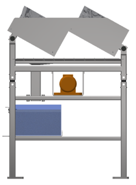
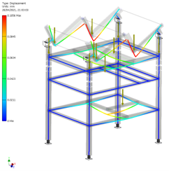
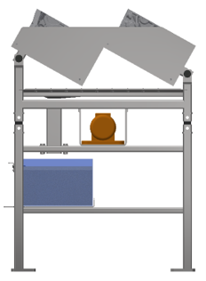
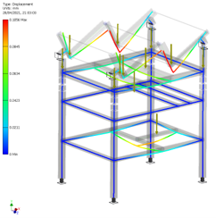
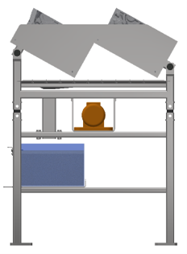
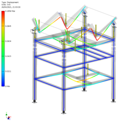

Rázóasztal


A rázásnak a lehető leghatékonyabban kell történni a ciklusidő betartása végett. Az egybeépített rázóasztalok számát bonyolult meghatározni. Befolyásoló tényező, hogy hány másodpercig kell/lehet rázni a hengerfejeket, mekkora és mennyi vibromotor beépítésénél a legjobb a hatásfok, mennyi idő alatt tudnak egy-egy hengerfejet a rázóba helyezni a robotok, mekkora hely áll rendelkezésre úgy, hogy a rázó ne lógjon bele a robotok holtterébe, mekkora helyet kell hagyni a szerelési és karbantartási munkálastokhoz, a rázósztalon összegyűjtött homokot mennyire könnyű kiüríten, mekkorára kell kialakítani a rázóasztal vázát és elemeit, hogy esetleges ütközés során se váljon javíthatatlanná és hogy elérhető-e mind a két robot számára az adott hengerfej a két robot összeütközése nélkül. Ezen megfontolások alapján az alaábbi rázóasztal lett kialakítva, amin látható, hogy szabadon elérhető a mind a megfogási pont a robotok számára a döntött elrendezésnek köszönhetően. A rázó beilleszthető a celáába mind helyigény, mind szilárdság, mind szerelhetőség szempontjából is. Mivel öntödébe beszerelendő az részegység a túlméretezés megengedett sőt preferált szilárdsági számításoknál hasnolóan a többi részegységhez.
| FŐOLDAL | Beütő állomás | Kaloda emelő | Megfogó |